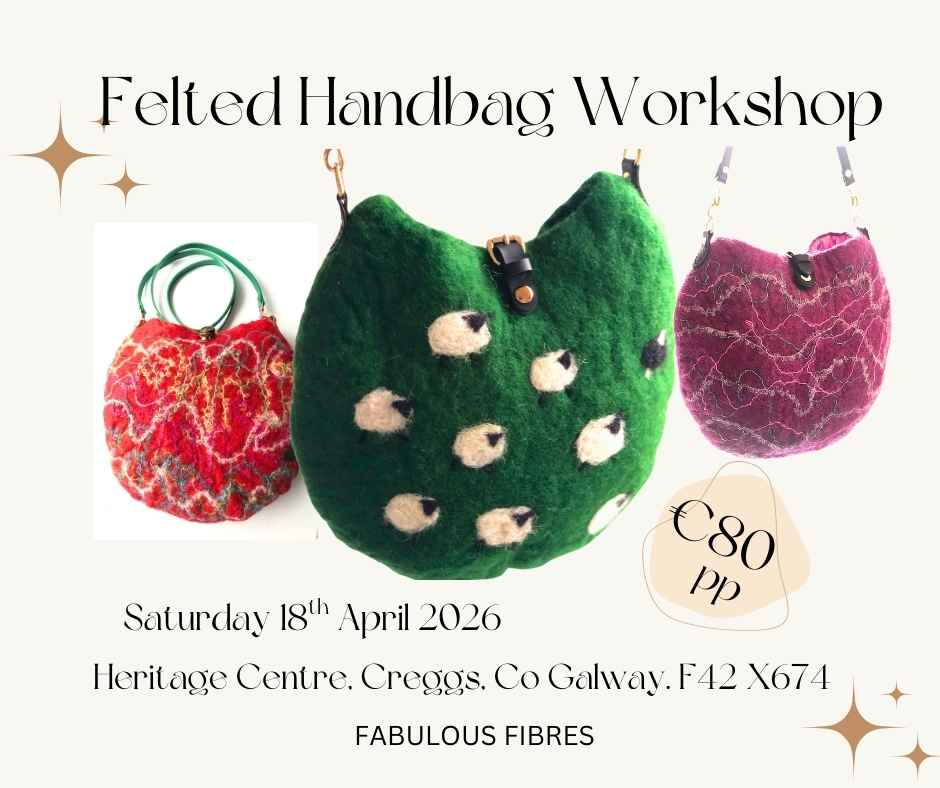
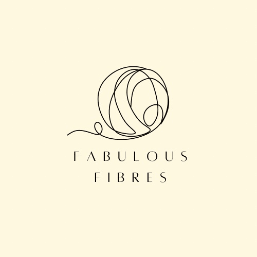

Felted Handbag Workshop
Arts and crafts
Discover the art of wet felting and create your own unique handbag in this hands-on one day workshop. Designed for both beginners and those with experience in felting, this course will guide you through the entire process of designing and making a stylish felted handbag from start to finish. By the end of this course, you will have created a personalised, handmade felted handbag that reflects your style and creativity. You will also gain the skills and confidence to continue to explore the art of felting on your own Time: 10am to 4pm Venue: Heritage Centre, Creggs, F42 X674 Included: All materials to create your handbag plus tea, coffee and cake
Verified 2026-03-13T09:09:02
Contact: karen@fabulousfibres.com
Address: Private Address
View on Google Maps →
Visit Website
View on Google Maps →